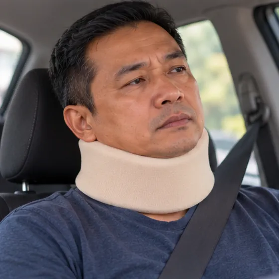

Sindrom leher dan bahu
Leher dan bahu yang tegang dan sengal, selalunya akibat kerja di meja atau penggunaan telefon
Apa itu
Ketegangan dan sengal berpanjangan pada otot leher, bahu dan belakang atas, selalunya dengan leher kaku dan sakit kepala tegang.
- Leher dan bahu
- Biasa dengan kerja di meja
- Tegang dan sengal
- Jumpa doktor
- Doktor keluarga, doktor ortopedik, ahli fisioterapi
- Biasa pada
- Pekerja pejabat, pemandu dan pengguna telefon yang kerap
- Berjangkit
- Tidak
- Perjalanan
- Hilang timbul, menjadi teruk dengan tekanan dan duduk lama
Butiran perubatan
Apa yang berlaku di leher dan bahu
Otot yang menghubungkan leher, bahu dan belakang atas (seperti trapezius atas, levator scapulae dan otot di antara tulang belikat) menyokong kepala, yang beratnya kira-kira 5 kg. Apabila kepala condong ke depan melihat skrin atau telefon, otot ini perlu bekerja jauh lebih kuat, jadi ia menjadi tegang dan letih. Jalur tegang dan simpulan yang sakit (titik pencetus miofasial) terbentuk dan boleh menghantar sengal ke kepala, tulang belikat atau lengan. Tekanan menambah ketegangan. Saraf dan cakera biasanya bukan masalah utama, tetapi kehausan leher boleh kelihatan serupa.
Corak biasa
- Ketegangan otot: otot tegang dan sakit apabila ditekan; sengal lebih teruk pada penghujung hari bekerja
- Sakit kepala tegang: sakit seperti jalur di belakang kepala atau sekitar pelipis
- Dengan rangsangan saraf: kesemutan ke lengan atau tangan perlu diperiksa oleh doktor
Prognosis
Ketegangan leher dan bahu biasanya bertambah baik dengan postur yang lebih baik, rehat untuk bergerak, senaman tetap dan pengurusan tekanan. Ia mudah berulang jika tabiat kekal sama. Keputusan rawatan dibuat oleh doktor anda.
Tanda biasa

Leher kaku dan sengalCervicalgia (sakit leher) 
Sakit di bahuSakit bahu 
Sakit kepala di belakangSakit kepala oksipital 
Sukar memalingkan kepalaPergerakan leher terhad 
Sengal di antara tulang belikatSakit antara tulang belikat 
Mata penat dan tegangKetegangan mata
Butiran perubatan
Gejala dengan lebih terperinci
- Sengal leher dan bahu: sengal yang tegang dan berat di leher dan bahagian atas bahu, lebih teruk selepas lama di skrin atau telefon
- Kekakuan: memalingkan kepala atau menghulur dihadkan oleh ketegangan
- Sakit kepala tegang: jalur sakit tumpul di belakang kepala atau pelipis, kadang-kadang dengan mata penat
- Di antara tulang belikat: sengal atau rasa terbakar di belakang atas
- Tidak biasa: kebas, kesemutan atau kelemahan pada lengan atau tangan, atau masalah keseimbangan, perlu diperiksa oleh doktor
Mengapa ia berlaku
Tunduk melihat telefonFleksi leher berpanjangan 
Beg berat di sebelah bahuBeban tidak seimbang 
Kurang bersenamOtot sokongan lemah 
Kecederaan leher lamaTrauma terdahulu (whiplash)
Butiran perubatan
Punca dan faktor risiko
- Kepala ke depan melihat skrin atau telefon: semakin jauh kepala condong ke depan, semakin banyak otot leher dan bahu perlu bekerja
- Duduk lama dan kerja berulang: berjam-jam dalam satu posisi, skrin yang terlalu rendah atau tinggi, dan bahu terangkat semasa menaip
- Beg berat di sebelah bahu: beban menarik otot di sebelah itu
- Kurang bersenam: otot sokongan yang lemah cepat letih
- Tekanan dan tidur yang kurang: ia menyebabkan bahu terus tegang dan melambatkan pemulihan
- Kecederaan leher terdahulu: whiplash atau ketegangan lama boleh menjadikan leher lebih sensitif
Jumpa doktor dahulu jika
- Sakit leher selepas jatuh atau kemalangan
- Sakit dengan demam atau leher yang sangat kaku dan sakit kepala teruk
- Kelemahan atau kebas baru pada lengan atau kaki
- Masalah keseimbangan atau berjalan
- Sakit dengan dada sesak, berpeluh atau sesak nafas: hubungi 999
- Sakit tidak reda selepas beberapa minggu
Jika mana-mana berkenaan, sila jumpa doktor sebelum sesi.
Teruskan mengambil ubat biasa anda dan terus berjumpa doktor. Sesi kami ialah sokongan lembut dan tidak menggantikan rawatan perubatan.
Butiran perubatan
Bagaimana doktor memeriksa
Perubahan pada imbasan biasa pada orang tanpa gejala, jadi keputusan sentiasa dibaca bersama gejala dan pemeriksaan anda.
- Sejarah dan pemeriksaan: kerja, postur dan tabiat anda, kemudian pergerakan leher dan bahu, otot yang sakit, kekuatan lengan, refleks dan deria
- X-ray atau MRI: tidak diperlukan oleh kebanyakan orang; digunakan apabila ada tanda amaran, gejala saraf atau sakit yang tidak bertambah baik
Masalah yang terasa serupa
Kehausan leher (spondilosis servikal), bahu beku, masalah rotator cuff, sindrom terowong karpal dan, jarang sekali, masalah jantung boleh terasa seperti ketegangan leher dan bahu, jadi doktor memeriksa untuk membezakannya.
Sakit bersama dada sesak, berpeluh atau sesak nafas boleh menjadi masalah jantung: hubungi perkhidmatan kecemasan (999).
Menjaga diri

Skrin setinggi mataErgonomik stesen kerja 
Berehat, regangan lembutRehat mikro dan mobiliti 
Bantal yang sesuaiSokongan tulang belakang neutral Beg di kedua-dua bahuBeban seimbang 
Berjalan, kekal aktifSenaman aerobik berimpak rendah 
Kehangatan lembutHaba permukaan
Butiran perubatan
Penjagaan harian dengan lebih terperinci
- Stesen kerja: bahagian atas skrin setinggi mata, kira-kira sejauh lengan; papan kekunci dekat; siku kira-kira 90 darjah; bahu santai, tidak terangkat
- Rehat untuk bergerak: berdiri dan bergerak setiap 30 hingga 45 minit; putar bahu dan palingkan kepala perlahan dari sisi ke sisi
- Senaman: berjalan tetap, berenang dan penguatan otot tulang belikat dan belakang atas
- Tidur: bantal yang menjaga leher dalam kedudukan neutral; elakkan tidur meniarap
- Membawa barang: guna beg di kedua-dua bahu atau troli, dan bawa lebih sedikit
- Kehangatan dan relaksasi: kehangatan boleh melegakan otot tegang; pernafasan perlahan dan jeda singkat membantu bahu berehat
Beritahu ahli terapi anda
- Lengan kebas atau kesemutan
- Kecederaan atau pembedahan leher baru-baru ini
- Tulang lemah
- Perentak jantung atau implan logam
- Kehamilan
- Pening apabila memalingkan kepala
Ahli terapi anda akan menyemaknya bersama anda sebelum bermula.
Soalan dan jawapan
Apakah Sindrom leher dan bahu?
Leher dan bahu yang tegang dan sengal, selalunya akibat kerja di meja atau penggunaan telefon. Ketegangan dan sengal berpanjangan pada otot leher, bahu dan belakang atas, selalunya dengan leher kaku dan sakit kepala tegang.
Apakah tanda biasa Sindrom leher dan bahu?
Leher kaku dan sengal · Sakit di bahu · Sakit kepala di belakang · Sukar memalingkan kepala · Sengal di antara tulang belikat · Mata penat dan tegang
Mengapa Sindrom leher dan bahu berlaku?
Tunduk melihat telefon · Beg berat di sebelah bahu · Kurang bersenam · Kecederaan leher lama
Bagaimana menjaga diri dengan Sindrom leher dan bahu?
Skrin setinggi mata · Berehat, regangan lembut · Bantal yang sesuai · Beg di kedua-dua bahu · Berjalan, kekal aktif · Kehangatan lembut
Bolehkah sesi AI Body Master membantu Sindrom leher dan bahu?
Sesi ialah sokongan meridian tanpa jarum yang lembut untuk kesejahteraan anda. Ia tidak merawat atau menyembuhkan Sindrom leher dan bahu dan tidak menggantikan ubat atau doktor anda. Beritahu ahli terapi anda sebelum sesi bermula.
Keadaan berkaitan
Rujukan: Mayo Clinic: Neck pain; NHS: Neck pain; Cleveland Clinic: Neck pain; NCBI StatPearls: Myofascial Pain Syndrome
Halaman dikemas kini: 2026-11-01